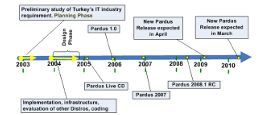

"The New Kid on the Block: Turkish Pardus Linux Distribution"
An OSOR Case Study

Open Source Observatory and Repository (OSOR) of the European Commission has published a case study on Pardus. The study penned by Suleyman K. Sowe, and has a detailed and extensive analysis of Pardus.
The conlusion of the report reads:
The Pardus project is a vibrant FLOSS project which succeeds because many people volunteer their time and effort to develop the software. UEAKE's involvement in the development process, directing the project's road map is one assurance that the Pardus project will survive in the long run. The fact that the majority of the downloads and organizations using Pardus are distributed all over Turkey is an indication that the goal of the project, to provide Turkish Linux users an operating system in their own language, has been met, and the system and warmly received.
The type of governance model involving sponsors, vendors, and the community envisaged by the Pardus project is a very interesting initiative and will be closely watched by the FLOSS community. If these three sectors can work together to further Pardus goals, then the FLOSS community is in for a great product. Organizations and individuals alike are benefiting from open source and taking the initiative to evaluate and benchmark various products in the markets. Each individual or enterprise will want to use their GNU/Linux desktop for a different purpose. Pardus GNU/Linux is responding well to users demands and slowly becoming the preferred Linux distribution for many people and organisations in Turkey.
|
 Pardus News Pardus News |
Sept, 15, 2008
// 2008.1 release can be found at our download page.
June, 29, 2008
// A test drive of stable release of 2008 can be found here
June, 21, 2008
// A review of Pardus 2008 RC2 can be found here
June, 11, 2008
// A review of Pardus 2008 RC1 can be found here
March, 19, 2008
// A recent review of 2007.3 can be found here
|
|